L'appartementThe apartment
Arrivée autonome. Les codes de l'immeuble et de la boîte à clés vous sont envoyés le jour J vers 15h45 sur la messagerie Airbnb.
Self check-in. The building and key box codes are sent to you on arrival day around 3:45 pm via Airbnb messages.
Trouver l'entréeFinding the entrance
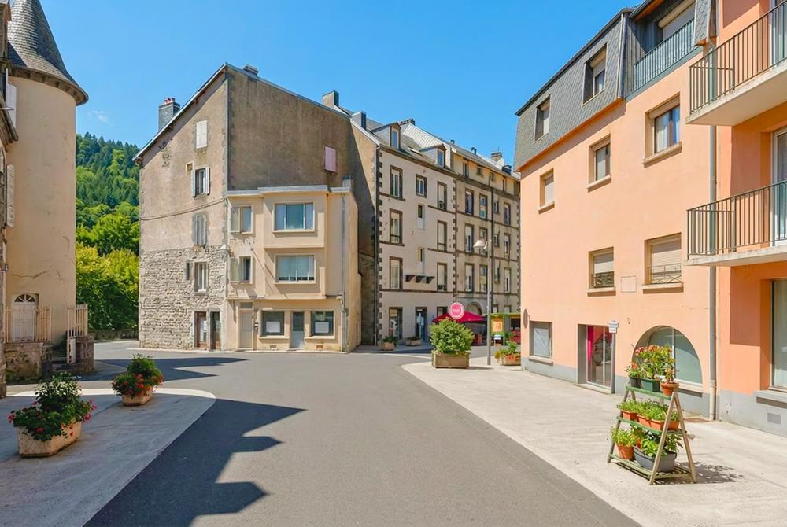
1Depuis la rue Meynadier, marchez vers la place, puis prenez la rue des Chevreuils.
From rue Meynadier, walk towards the square, then turn into rue des Chevreuils.
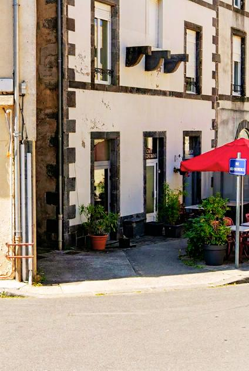
2Sur la gauche, juste après l'angle du bâtiment : une porte discrète, en retrait. Entrez avec le code de l'immeuble.
On the left, just past the corner of the building: a discreet, set-back door. Use the building code.
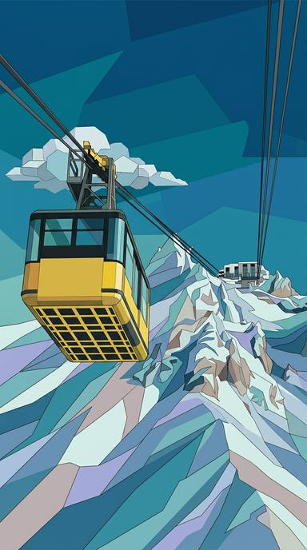
3L'ascenseur va jusqu'au 3ᵉ étage, puis il reste un étage à pied.
The lift goes to the 3rd floor, then one more flight on foot.
La boîte à clés ?The key box?
Elle est sur le palier, juste en face de la porte de l'appartement.
It's on the landing, right opposite the apartment door.
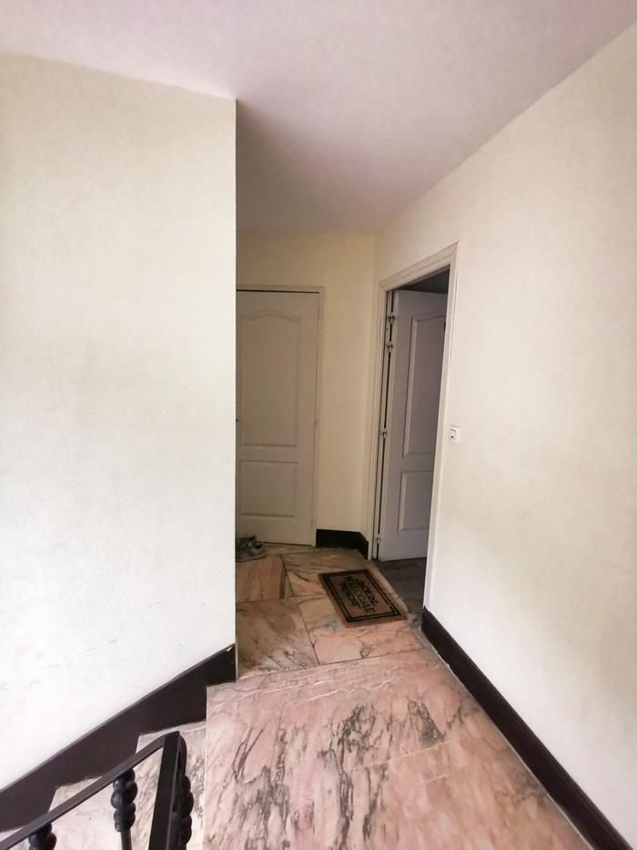
1Arrivé en haut, avancez sur le palier.
At the top, walk onto the landing.
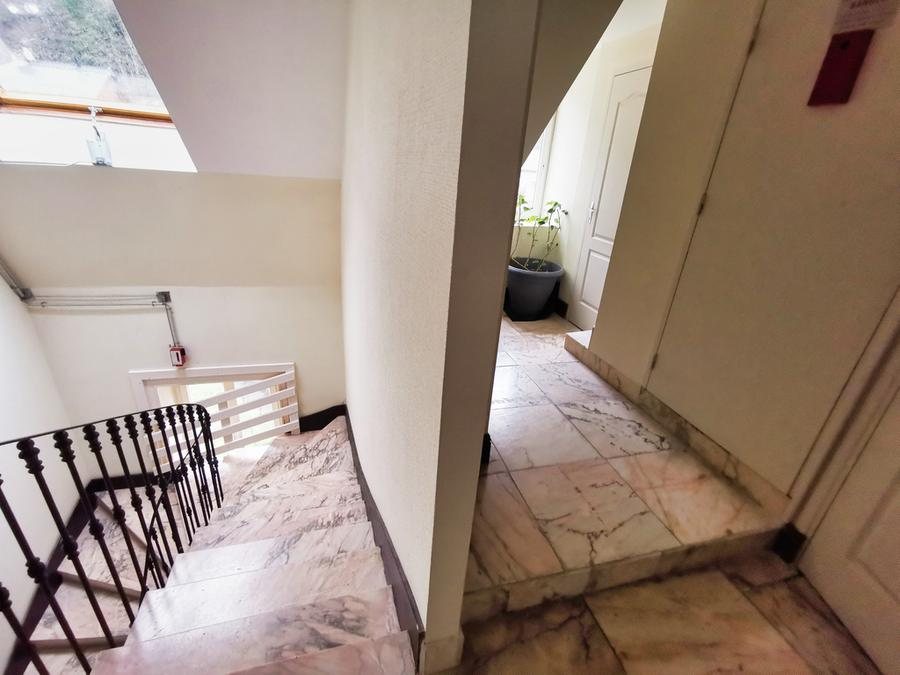
2Tournez le dos à la porte de l'appartement.
Turn your back to the apartment door.
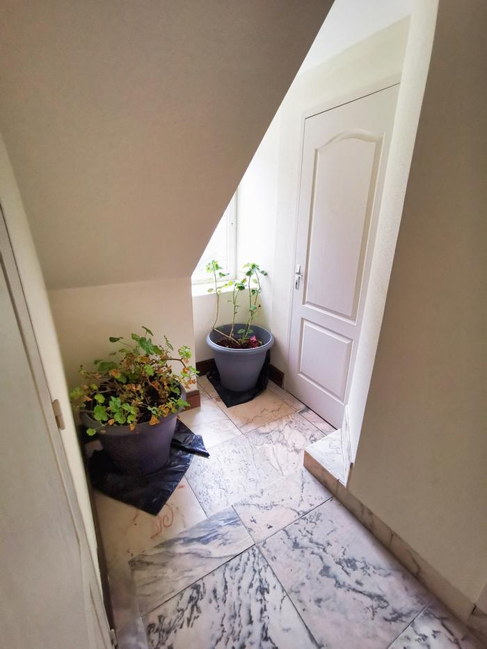
3Au fond à droite, près de la fenêtre.
At the back on the right, by the window.
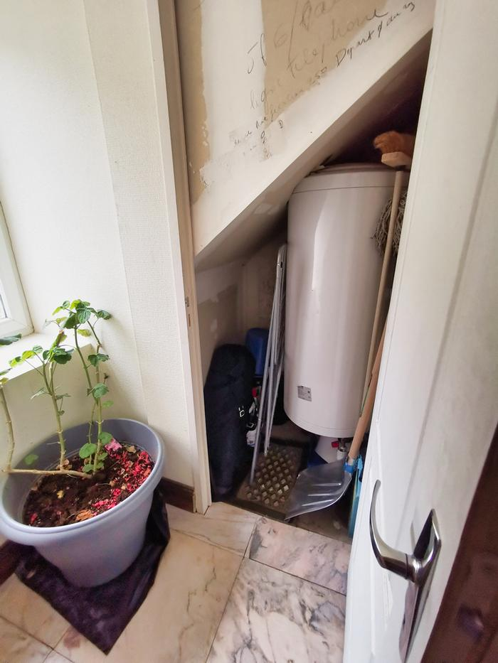
4Sur la gauche du local. Entrez le code, puis appuyez sur les deux boutons latéraux.
On the left inside the closet. Enter the code, then press both side buttons.
Un petit message une fois installés me fait toujours plaisir 😊A quick message once you're settled in is always appreciated 😊
Se garerParking
Il y a des places tout autour de l'immeuble et quelques parkings gratuits en ville.
There are spaces all around the building and a few free car parks in town.
Neige ? Une pelle est à votre disposition. Si la voiture patine : dégagez les roues, coupez l'antipatinage, accélérez doucement en 2ᵉ.
Snow? A shovel is provided. If the car spins: clear the wheels, switch off traction control, pull away gently in 2nd gear.
Wifi
Livebox Soleil Des Thermes 9bonjoursoleildesthermes9Votre coconYour cosy nest
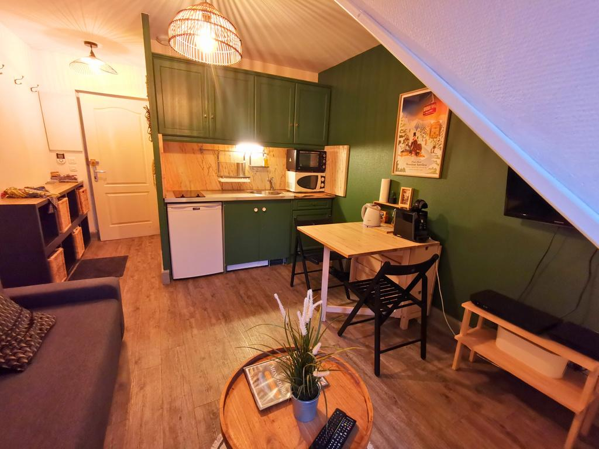
28 m² au dernier étage, personne au-dessus : le calme est garanti.
28 m² on the top floor, no one above you: peace and quiet guaranteed.
CuisineKitchen
- Plaques 2 feux, micro-ondes, petit four
- Frigo
- Cafetière filtre et Tassimo
- Bouilloire, grille-pain
- Vaisselle complète, verres à vin
- 2-ring hob, microwave, small oven
- Fridge
- Filter and Tassimo coffee makers
- Kettle, toaster
- Full tableware, wine glasses
SalonLiving room
- Table extensible (2 à 4 pers.)
- Canapé convertible 140×190
- TV avec box Orange
- Lave-linge
- Extendable table (2 to 4)
- Sofa bed 140×190
- TV with Orange box
- Washing machine
ChambreBedroom
- Lit double 140×190
- Draps, alèses, oreillers
- Placards, fauteuil
- Lit parapluie
- Double bed 140×190
- Sheets, mattress protectors, pillows
- Wardrobes, armchair
- Travel cot
Salle de bainBathroom
- Douche, lavabo, WC
- Sèche-serviettes
- Sèche-cheveux
- Réducteur de toilette
- Shower, basin, toilet
- Heated towel rail
- Hair dryer
- Child toilet seat
Draps fournis, le lit est à faire à l'arrivée. Serviettes non fournies : pensez à les apporter, avec des torchons. Aspirateur, serpillière et produits ménagers sont dans un placard de la chambre.
Bed linen provided, please make the bed on arrival. Towels not provided: bring your own, plus tea towels. Vacuum, mop and cleaning products are in a bedroom cupboard.
Mode d'emploiHow-to
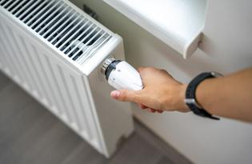
Le thermostat central ne marche pas : réglez chaque radiateur directement sur l'appareil.
The central thermostat doesn't work: adjust each radiator directly.
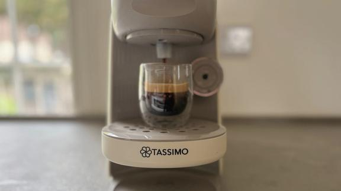
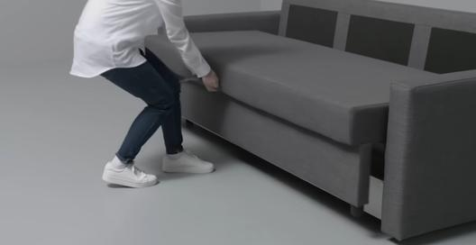
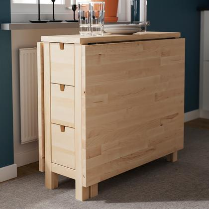
Allumez la TV (petite télécommande Samsung), puis la box (grande télécommande Orange, un peu lente). Changez de chaîne uniquement avec la télécommande Orange.
Turn on the TV (small Samsung remote), then the box (large Orange remote, a bit slow). Change channels with the Orange remote only.
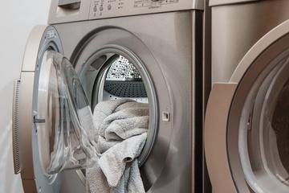
Une petite machine est à votre disposition.
A small washing machine is available.
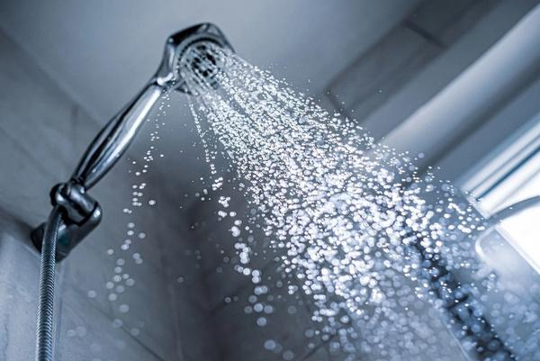
L'écoulement est un peu lent depuis toujours : c'est normal.
The drain has always been a little slow: that's normal.
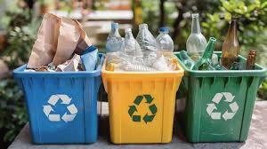
Pas de local dans l'immeuble : containers en ville. Carte des points
No bin room in the building: use the street containers. Map of drop-off points
RèglesHouse rules
Le départCheck-out
Avant 12h, en toute autonomie. Cochez au fur et à mesure : comptez 20 à 30 minutes.
By noon, on your own. Tick things off as you go: it takes 20–30 minutes.
En directLive info
Selon la saisonBy season
Les pistes sont à 2 km du village. Des navettes gratuites partent du centre (arrêts rue Meynadier et La Poste) quand les pistes sont ouvertes : tous les jours pendant les vacances, sinon le week-end. Pour la saison 2026-2027 : du 19 décembre au 22 mars. Elles sont réservées aux skieurs.
The slopes are 2 km from the village. Free shuttles leave from the centre (stops on rue Meynadier and at the Post Office) when the slopes are open: daily during school holidays, otherwise at weekends. 2026-27 season: 19 December to 22 March. Skiers only.
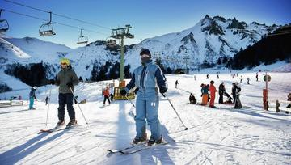
Ski alpin, snowboard, luge : la plus grande station du Massif central. Location de matériel au village et au pied des pistes.
Downhill skiing, snowboarding, sledging: the largest ski area in the Massif Central. Equipment hire in the village and at the bottom of the slopes.
ItinéraireDirections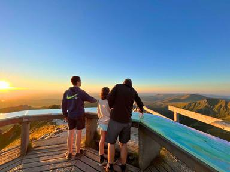
Le téléphérique rouvre le 19 décembre 2026 (tous les jours 9h–17h15). Vue magique sur les volcans enneigés.
The cable car reopens on 19 December 2026 (daily 9 am–5:15 pm). Magical views over snowy volcanoes.
ItinéraireDirections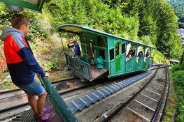
Des itinéraires balisés partent autour du village et de la station. Plans et location de raquettes : office de tourisme et loueurs du village.
Marked trails start around the village and the ski area. Maps and snowshoe hire: tourist office and village shops.
ItinéraireDirections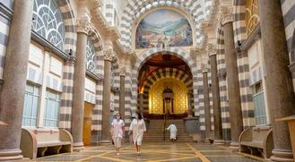
Les Thermes néo-byzantins, la patinoire, le bowling, le cinéma, et une truffade au retour des pistes.
The neo-Byzantine spa building, ice rink, bowling, cinema, and a truffade after a day on the slopes.
ItinéraireDirectionsSur la route : pneus neige ou chaînes conseillés de novembre à mars (obligatoires dans le Puy-de-Dôme en hiver).
On the road: winter tyres or snow chains are recommended from November to March (mandatory in the Puy-de-Dôme in winter).
Tout part à pied du village.
Everything starts on foot from the village.
Automne 2026 : le téléphérique du Sancy est fermé pour travaux jusqu'au 18 décembre. On peut monter au sommet à pied (environ 2 h depuis la station).
Autumn 2026: the Sancy cable car is closed for maintenance until 18 December. You can hike to the summit (about 2 hours from the ski area).
Le point culminant du Massif central (1 886 m). En téléphérique puis 15–20 min à pied, ou en randonnée.
The highest point in central France (1,886 m). By cable car then a 15–20 min walk, or as a hike.
ItinéraireDirections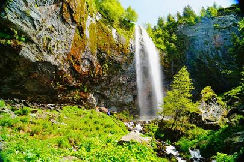
Une rando simple et très agréable depuis la ville, même pour les petites jambes.
An easy, lovely walk from town, even for little legs.
ItinéraireDirectionsLe plus ancien funiculaire électrique de France vous monte à 1 300 m : vue sur la vallée et départ de randonnées.
France's oldest electric funicular takes you up to 1,300 m: valley views and hiking trails.
ItinéraireDirections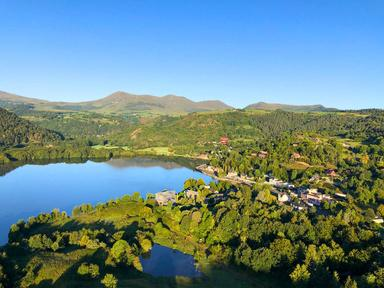
Chambon (plage, paddle), Guéry (sauvage, à 1 200 m) et Pavin, à quelques minutes en voiture.
Chambon (beach, paddleboarding), Guéry (wild, at 1,200 m) and Pavin, a short drive away.
ItinéraireDirectionsUn édifice néo-byzantin superbe : mosaïques, fresques, eaux volcaniques.
A stunning neo-Byzantine building: mosaics, frescoes, volcanic waters.
ItinéraireDirections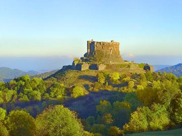
Château médiéval qui domine la vallée, animations en saison.
A medieval castle overlooking the valley, with shows in season.
ItinéraireDirectionsApplis rando :Hiking apps: Sancy Explorer, Visorando. Et leAnd the groupe Facebook des voyageursguests' Facebook group.
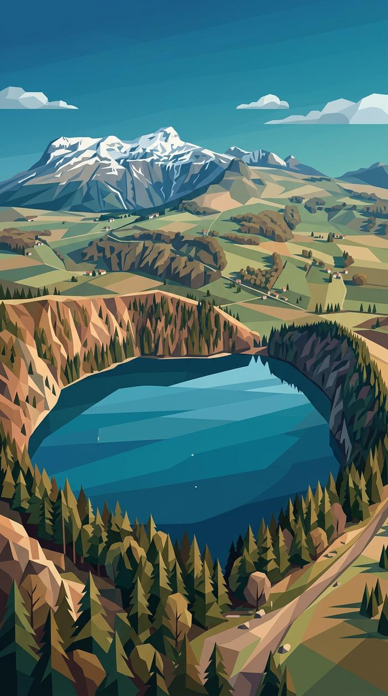
Le lac Pavin, à 25 minutes : le plus beau lac volcanique d'Auvergne.
Lac Pavin, 25 minutes away: Auvergne's most beautiful volcanic lake.
Restaurants
Réservez toujours quelques jours avant. En novembre et début décembre, beaucoup d'établissements ferment.
Always book a few days ahead. In November and early December, many places close.
Truffade à l'ancienne, saint-nectairade, spécialités auvergnates.
Old-style truffade, saint-nectairade, Auvergne specialities.
Fermé lundi et mardiClosed Mon and TueBistrot auvergnat au cœur du village.
Auvergne bistro in the heart of the village.
Horaires variables : appelez avantOpening hours vary: call aheadCuisine traditionnelle, tout fait maison.
Traditional, all home-made cooking.
Ouvert jeudi–samedi midi et soir, dimanche midi · fermé du 7 au 18 décembreOpen Thu–Sat lunch and dinner, Sun lunch · closed 7–18 DecemberMenu unique du jour à la ferme : potée (lundi, jeudi), truffade (mercredi, week-end), goûter et crêpes. Réservation obligatoire.
One set menu a day at the farm: potée (Mon, Thu), truffade (Wed, weekends), afternoon tea and crêpes. Booking required.
12h–17h30, fermé mardi et vendredi · fermé du 2 novembre au 19 décembre12 pm–5:30 pm, closed Tue and Fri · closed 2 November to 19 DecemberCuisine de saison et produits locaux, sans carte fixe. Le chef est Toque d'Auvergne.
Seasonal cooking with local produce, no fixed menu. The chef is a Toque d'Auvergne.
Fermé mardi et mercredi (hors été) · peu de services le soirClosed Tue and Wed (outside summer) · few evening servicesHoraires relevés en octobre 2026, ils peuvent changer : un coup de fil avant est toujours plus sûr.Hours checked in October 2026 and may change: a quick call ahead is always safer.
Infos pratiquesPractical info
CoursesShopping
Santé et servicesHealth & services
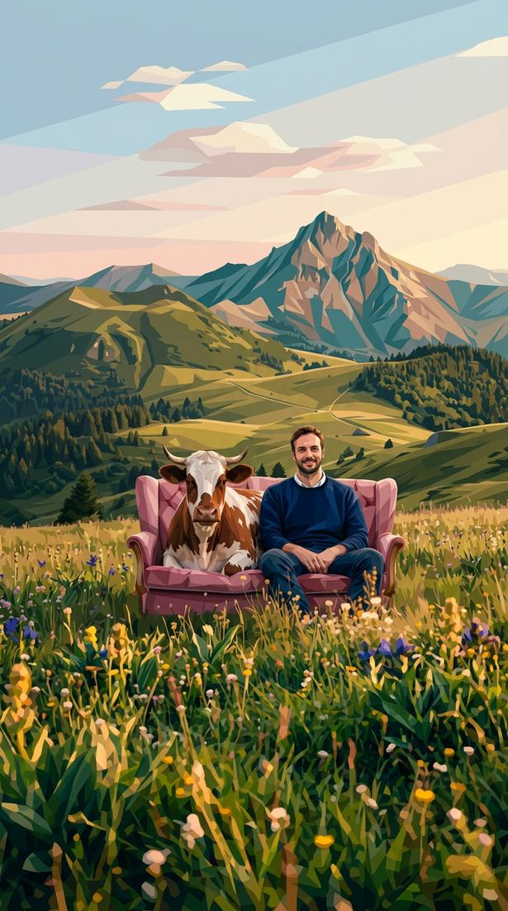
Je suis làI'm here
Écrivez-moi sur la messagerie Airbnb ou par SMS :
Message me on Airbnb or by text:
06 44 23 37 30Urgence et je ne réponds pas : Sylvie, qui s'occupe de l'appartement, auEmergency and I don't answer: Sylvie, who looks after the apartment, on 06 11 88 05 30.